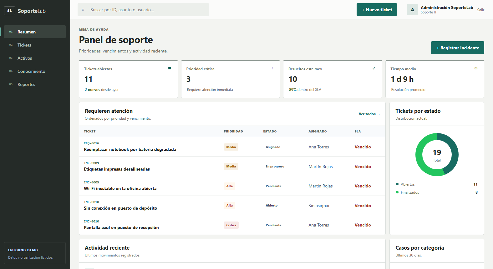
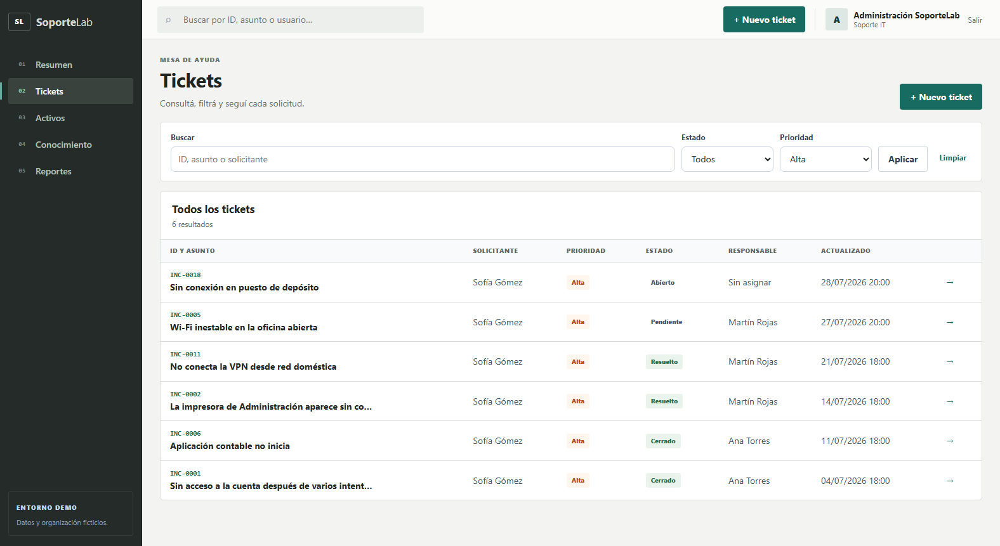
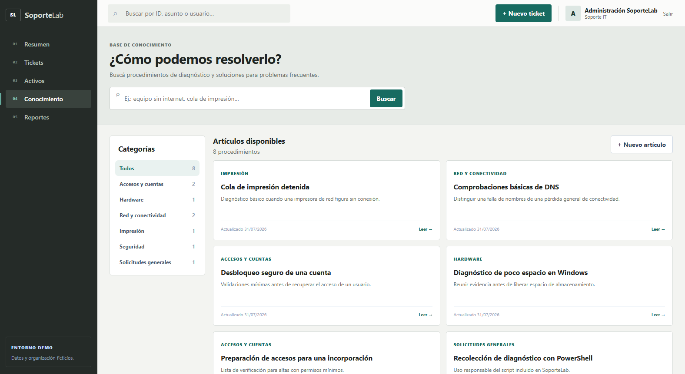

01
Recuperar la operación
Entender el impacto, priorizar correctamente y devolverle al usuario una solución verificable.
Cómo abordo incidentes, activos y continuidad operativa con método, evidencia y comunicación clara.

UNA RESOLUCIÓN DE CALIDAD
Entender el impacto, priorizar correctamente y devolverle al usuario una solución verificable.
Distinguir síntomas, reunir datos y evitar cambios innecesarios o conclusiones apresuradas.
Explicar avances y próximos pasos sin trasladar complejidad técnica al usuario.
Registrar qué ocurrió, qué se hizo y cómo reutilizar la solución ante futuros casos.
Aporto pensamiento lógico, disciplina operativa y capacidad para transformar problemas técnicos en acciones concretas.
TRES FUENTES · UNA MISMA FORMA DE TRABAJAR
Operario de Línea Automática
Nov. 2021 — Feb. 2023
Simulación educativa
Datos y organización ficticios
Formación finalizada
y aprendizaje continuo
CONTINUIDAD OPERATIVA
RESPONSABILIDADES REALES
VALOR TRANSFERIBLE A SOPORTE IT
DEL REPORTE AL CONOCIMIENTO
Escuchar y confirmar el problema.
Evaluar impacto y urgencia.
Separar hechos de supuestos.
Probar una variable por vez.
Actuar dentro del alcance autorizado.
Confirmar servicio y resultado.
Registrar acciones y evidencia.
Transformar la solución en conocimiento.
“Antes de cambiar una configuración, necesito entender qué funciona, qué falla y qué evidencia sostiene la hipótesis.”
RAZONAMIENTO DIAGNÓSTICO
REPORTE
El impacto se entiende antes de intervenir.
AISLAMIENTO
La conectividad física deja de ser la hipótesis principal.
RESOLUCIÓN
Se retira el trabajo, se reanuda la cola y se valida con una página de prueba.
CONOCIMIENTO REUTILIZABLE
La solución queda documentada como procedimiento para futuros casos.
LABORATORIO PERSONAL

ACTIVOS SIMULADOS
Computadoras, notebooks, impresoras y equipos de red con estado, ubicación, responsable y sistema operativo.
POWERSHELL · SOLO LECTURA
Reúne datos de Windows, hardware, discos, interfaces, DNS y conectividad sin modificar la configuración.
El inventario demuestra criterio para vincular activos e incidentes. No se presenta como administración profesional de infraestructura empresarial.
CERRAR EL CICLO

SíntomaQué reporta el usuario.
EvidenciaQué datos se obtuvieron.
DiagnósticoQué explica el problema.
ResoluciónQué acción se realizó.
ValidaciónCómo se confirmó el servicio.
ConocimientoCómo reutilizar lo aprendido.
COMUNICACIÓN CON EL USUARIO
Confirmar que el problema fue entendido.
Informar avances sin tecnicismos innecesarios.
Validar la solución y explicar próximos pasos.
PRÓXIMO DESAFÍO
Oportunidades en Soporte IT, Help Desk, Service Desk, monitoreo u operaciones IT junior.
Diagnóstico de hardware y software · Windows · Linux Ubuntu · aplicaciones · tickets · documentación
Fundamentos de TCP/IP · DNS · DHCP · LAN/WAN · troubleshooting de conectividad
PowerShell · Python · Django · JavaScript · SQL · PostgreSQL · Git y GitHub
Pensamiento lógico · organización · atención al detalle · comunicación clara · aprendizaje continuo